Prueba de primalidad por división de prueba optimizada
Una forma directa de verificar si un número entero \(N\)< es primo, consiste en evaluar si tiene divisores en el intervalo \([2, \sqrt{N}]\). Sin embargo, evaluar todos los candidatos genera redundancia: si un numero no es divisible entre 2, tampoco lo será entre nignún otro número par.
Al manejar el 2 como un caso especial, podemos restringir el bucle de busqueda exclusivamente a candidatos impares. Esta estrategia reduce a la mitad el espacio de busqueda en el bucle principal, mejorando la eficiencia del algoritmo sin perder rigor técnico.
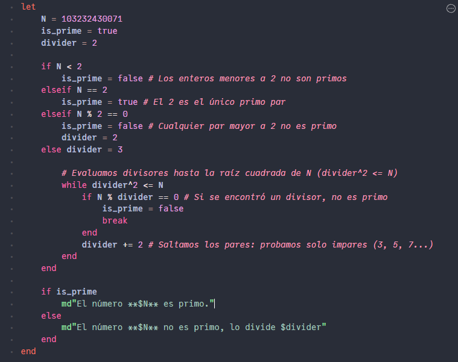
Metodo Newton-Raphson
El método Newton-Raphson es un algoritmo iterativo fundamental en el análisis numérico para la busqueda de raíces de funciones diferenciables. Partiendo de una estimación inicial \(x_0\), la idea geométrica consiste en sustituir la función por su recta tangente en dicho punto y calcular la intersección con el eje horizontal para obtener una mejor aproximación \(x_{n+1}\). Algorítmicamente, se iteran las estimaciones mediante la relación $$x_{n+1} = x_n - \frac{f(x_n)}{f'(x_n)}$$ finalizando el proceso cuando la magnitud del residuo \(|f(x_n)|\) es menor que una tolerancia \(\delta\) establecidad, o bien interrumpiendo la ejecución si la derivada es cercana a cero o si se supera un número máximo de iteraciones.
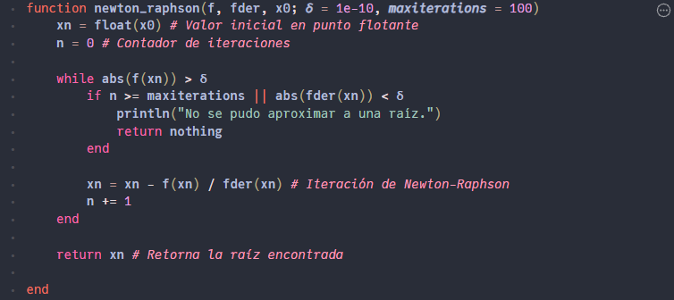
Ejemplo de uso:
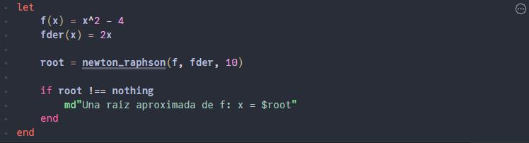
Permutacion ciclica de canales de color RGB
El procesamiento de imágenes matriciales permite alterar la apariencia visual de una fotografía modificando la combinación de sus canales cromáticos punto a punto. Al acceder individualmente a las componentes de cada píxel, es posible aplicar transformaciones algebraicas sobre el espacio de color.
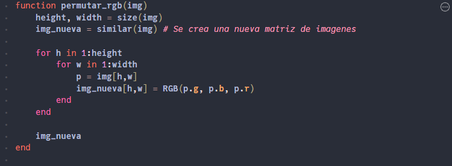
Esta función en Julia recorre la matriz de píxeles y realiza una permutación cíclica de los canales, reasignando las intensidades según el mapeo \((R, G, B) \mapsto (G, B, R)\). Para evitar mutar la imagen original de forma destructiva, se asigna espacio en memoria mediante \(similar(img)\) y se construye un nuevo arreglo con la transformación cromática aplicada.
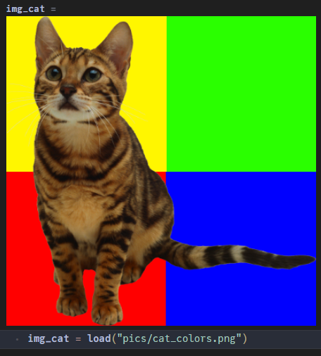
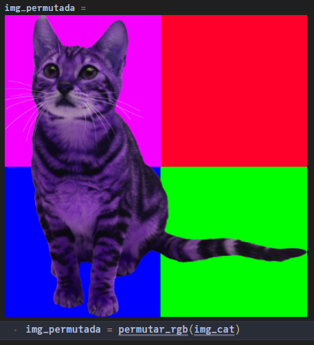
Dibujo de primitivas geométricas y recortes en matrices de pixeles
El renderizado de formas geométricas sobre imágenes matriciales involucra la manipulación directa de índices bidimensionales y la gestión explícita de bordes. Para rectángulos alineados con los ejes coordenados, la delimitación de la región de interés se reduce a encontrar los valores mínimos y máximos de las coordenadas de sus vértices.
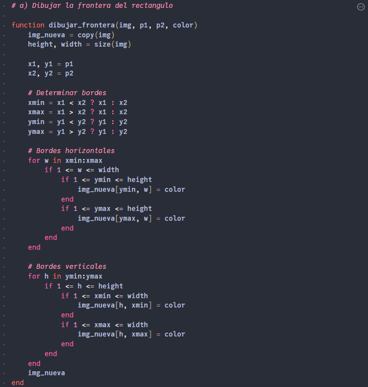
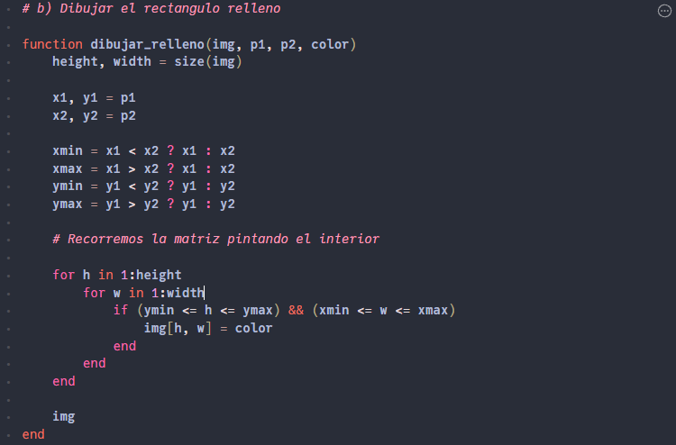
Estas funciones en Julia permiten trazar tanto la frontera como la superficie rellena de un rectángulo sobre una imagen existente. Para garantizar la solidez del algoritmo ante entradas externas, se aplica un proceso de recorte (clipping) mediante la intersección de los intervalos \([x_{\min}, x_{\max}]\) y \([y_{\min}, y_{\max}]\) con las dimensiones reales de la imagen, evitando accesos fuera de rango en la matriz.
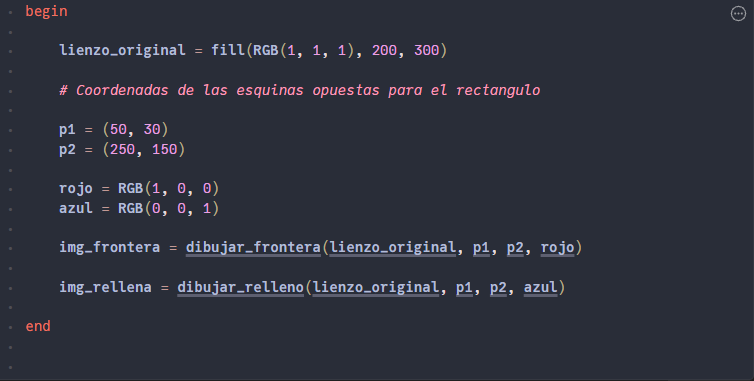
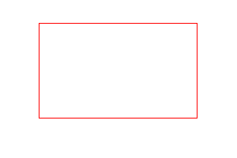
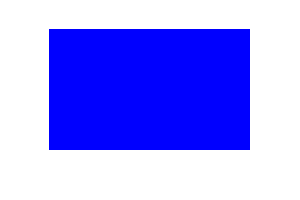